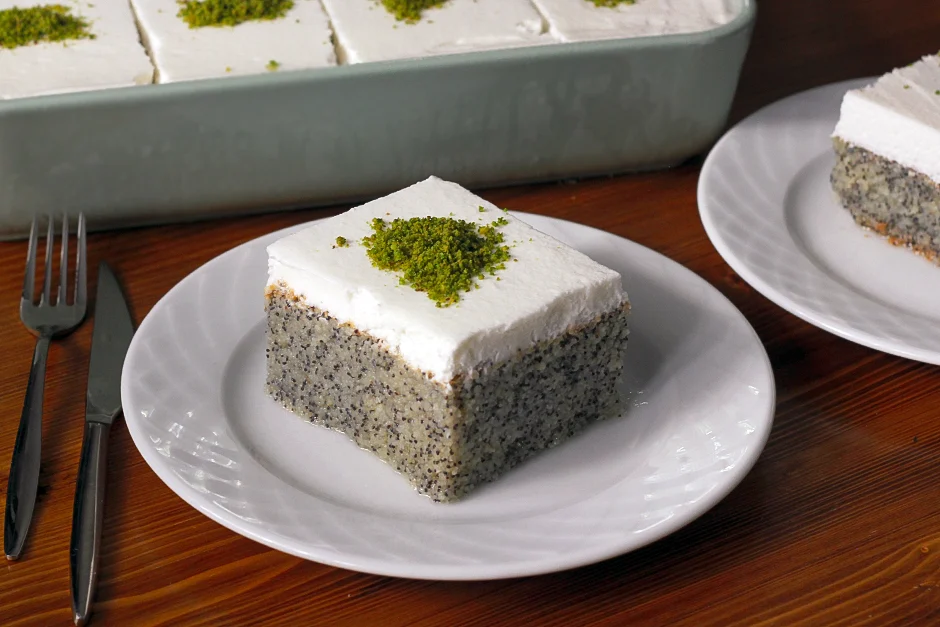

~Haşaşlı İrmik Tatlısı~

Tarifi Veren: Esra Atalar Birinci
Malzemeler
- Şerbeti için:
- 1,5 Su Bardağı Toz Şeker
- 3 Bardak Su
- 3-4 Damla Limon Suyu
- Keki İçin
- 3 Adet Yumurta
- 1 Su Bardağı Toz Şeker
- 1 Su Bardağı Süt
- 1 Su Bardağı Sıvı Yağ
- 1 Su Bardağı İrmik
- 1 Su Bardağı Mavi Haşhaş Tohumu
- 1 Su Bardağı Un
- 1 Paket Kabartma Tozu
- Üzeri İçin
- 1 Paket Krem Şanti
- 1,5 Su Bardağı Soğuk Süt
- 2 Yemek Kaşığı Toz Antep Fıstığı
Hazırlanışı
- Şerbeti için gerekli olan su ve şekeri bir tencereye alıp, şeker eriyene dek tahta bir kaşıkla karıştırın. Ardından ocağın altını açın ve kaynamaya bırakın. Kaynamaya başladıktan sonra içine limon suyunu ilave edin. Bu şekilde 5 dakika daha kaynatın ve ocağın altını kapatıp, soğumaya bırakın.
- Derin bir kap içinde yumurta ve şekeri bir mikser yardımıyla yaklaşık 5 dakika çırpın.
- Sıvı yağ ve sütü ekleyin. Haşhaş ve irmiği de ekledikten sonra güzelce karıştırın.
- Son olarak elenmiş un ve kabartma tozunu ilave edip tüm malzemeler birleşinceye dek düşün ayarda mikserle veya bir spatulayla karıştırın.
- Alt kısmı hafifçe yağlanmış 30x20 boyutlarında borcama hazırladığınız kek karışımını dökün ve önceden ısıtılmış fansız 180 derece fırında, üstü kızarana dek yaklaşık 30-35 dakika boyunca pişmeye bırakın.
- Üstü için krem şantiyi, soğuk sütle iyice çırpın ve dolaba kaldırın.
- Kek piştikten sonra fırından alın. Üstüne henüz sıcakken bir kürdan yardımıyla delikler açın ve soğumuş olan şerbeti kekin üstüne dökün. Şerbeti iyice çekip keki soğuyana dek oda sıcaklığında dinlendirin.
- Kek şerbeti tamamen çektikten ve soğuduktan sonra, üstüne dolapta soğumaya bıraktığınız krem şantiyi güzelce sürün.
- Buzdolabında en az 2 saat tercihen 4-5 saat dinlendirin. Servis etmeden önce dilimleyerek toz Antep fıstığını serpiştirin.
- Dilediğiniz boyutlarda keserek servis edebilirsiniz, afiyet olsun!